Zhouhan Lin (林洲汉)
Associate Professor
E-mail :
lastname[dot]firstname[the simbol]gmail.com or
[github name][the simbol][university abbreviation].edu.cn
Office : Room 437, Dianyuan Building #1


Bio
I am an associate professor at the
John Hopcroft Center of Computer Science
at Shanghai Jiao Tong University (SJTU),
and I am leading the Language Understanding and Machine Intelligence Algorithms (LUMIA) group.
Before joining SJTU, I was a visiting scientist at Facebook AI Research (FAIR) in Menlo Park, CA,
working with Michael Auli.
I received my Ph.D. in Computer Science from the Mila lab
in the University of Montreal in 2019,
where I was fortunately supervised by Yoshua Bengio.
During my Ph.D., I've been interning at Google AI in the
Language team in New York City, and at IBM Watson
with Bowen Zhou and
Mo Yu in Yorktown Height, NY. I also worked as a part-time student researcher at
Microsoft Research
with Alessandro Sordoni and
Adam Trischler in Montreal.
Prior to Mila, I received my B.Sc. (2012) and M.Sc. (2014) degrees from
Harbin Institute of Technology. For more information, you can find my CV here.
I am actively looking for highly motivated undergrads, interns, and prospective Master's (2025, 2026) or Ph.D. (2026) students to work with me.
If you are interested in my research topics, please kindly drop me an email, preferably the @sjtu.edu.cn address.
Unfortunately, I have no more Ph.D. positions available for the year 2025.
Research
My core research interest is to explore and develop machine intelligence capable of acquiring, forming, reasoning, and interacting with abstract concepts from large amounts of data，
especially through self-supervised learning.
Almost all of my research efforts are centered around this goal, touching on a diverse range of topics such as attention mechanisms, language modeling, dialog systems, automated summarization, grammar induction,
graph neural networks, code generation, etc. A list of topics that I am interested in at the moment are:
- Methods that could suppress hallucination in LLMs, such as retrieval-based methods, external memory, etc.
- Long sequence modeling, such as learning multi-scale representations, efficient attention mechanisms, etc.
- Graph representation learning, especially those with evolving graph structures.
Teaching
- CS-1605 Programming Practice (C++) （C++程序设计实践）
- CS-3602 Natural Language Processing （自然语言处理）
News
- Dec. 2024: I gave two talks on CIPS-LMG 2024. The slides can be found here (our NeurIPS work on human-readable fingerprint) and here (the efficient LLM tutorial).
- Sep. 2024: Our human-readable LLM fingerprint ([1]) and Cluster-wise Graph Transformer [2]) got accepted at NeurIPS 2024, with [2] being spotlight!
- Sep. 2024: Four papers ([1][2][3][4]) are accepted
at EMNLP 2024!
- Jan. 2024: One paper got accepted at ICLR 2024!
- Jan. 2024: Our pretrained geoscience LLMs are fully released! Papers, codes and checkpoints are available! The 30B model, named GeoGalactica (code&checkpoints),
is based on Galactica, and the 7B model, named K2 (code&checkpoints), is based on LLaMA.
- Sep. 2023: One paper got accepted at NeurIPS 2023!
- May. 2023: Two papers ([1][2]) are accepted at ACL 2023!
- Mar. 2023: Yunchong Song has got the ICLR Travel Award, congratuations!
- Feb. 2023: Two papers ([1][2]) are accepted at ICASSP 2023!
- Jan. 2023: One paper is accepted at ICLR 2023!
- Oct. 2022: Three papers ([1][2][3]) are accepted
at EMNLP 2022!
- Feb. 2022: Two papers ([1][2]) are accepted at ACL 2022!
Selected Publications
This is a selected list of my publications. For an up-to-date, complete list, please refer to
my Google Scholar page.
(*) indicates equal contribution. (#) indicates the corresponding author.
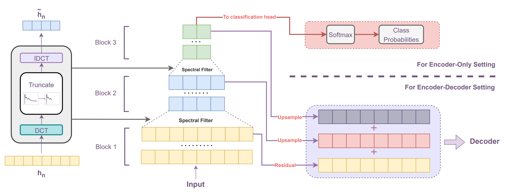
Fourier Transformer: Fast Long Range Modeling by Removing Sequence Redundancy with FFT Operator
Ziwei He, Meng Yang, Minwei Feng, Jingcheng Yin, Xinbing Wang, Jingwen Leng, Zhouhan Lin#
We propose Fourier Transformer, a simple yet effective approach by layer-wise progressively removing sequence redundancies in hidden states using the ready-made Fast Fourier Transform (FFT) operator to perform Discrete Cosine Transformation (DCT). Fourier
Transformer is able to significantly reduce computational costs while retaining the ability to inherit from various large pretrained models. SOTA performances among all transformer-based models on the LRA benchmark with
significant improvement in both speed and space. For generative seq-to-seq tasks including CNN/DailyMail and ELI5, by inheriting the BART weights our model outperforms the standard BART and other efficient models.
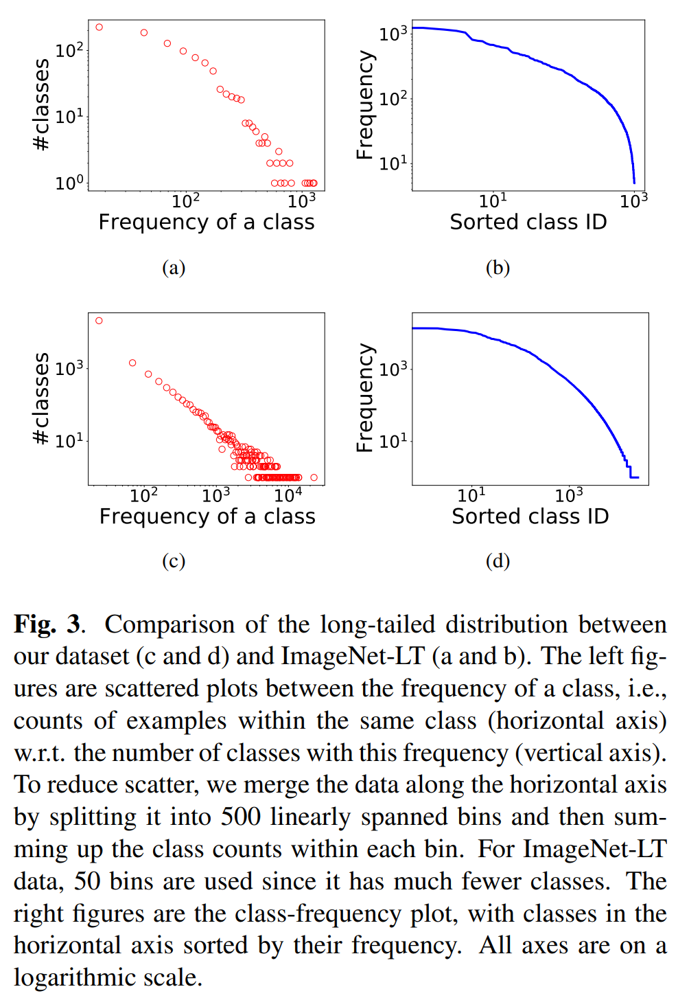
Text Classification In The Wild: A Large-Scale Long-Tailed Name Normalization Dataset
Jiexing Qi, Shuhao Li, Zhixin Guo, Yusheng Huang, Chenghu Zhou, Weinan Zhang, Xinbing Wang, Zhouhan Lin#
In this work, we first collect a large-scale institution name normalization dataset LoT-insts, which contains over 25k classes that exhibit a naturally long-tailed distribution. In order to isolate the few-shot and zero-shot learning scenarios from the
massive many-shot classes, we construct our test set from four different subsets: many-, medium-, and few-shot sets, as well as a zero-shot open set. We believe it provides an important and different scenario to study this
problem.
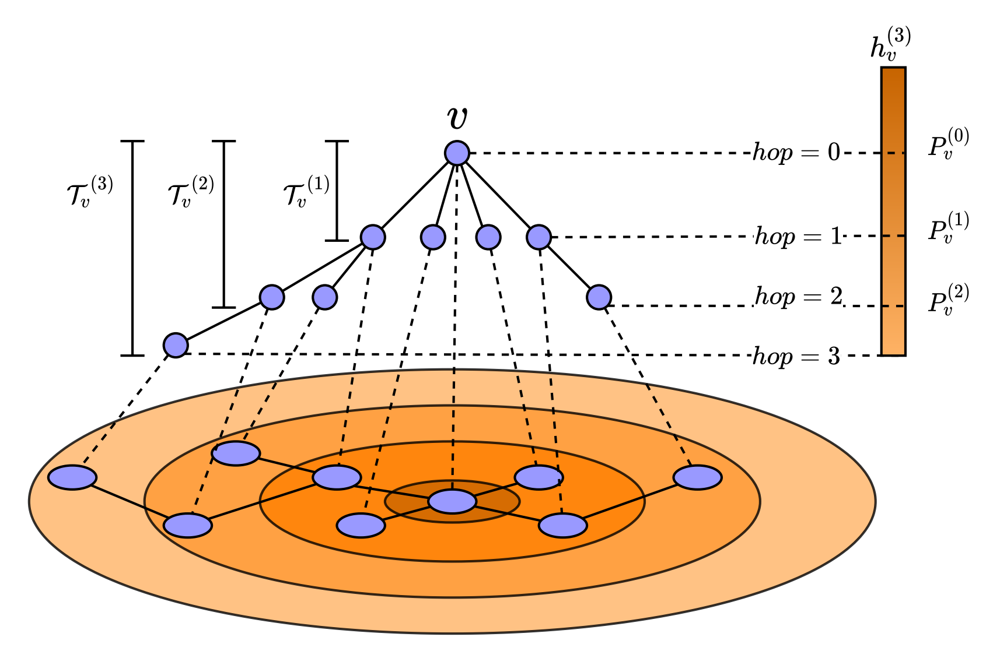
Ordered GNN: Ordering Message Passing to Deal with Heterophily and Over-smoothing
Yunchong Song, Chenghu Zhou, Xinbing Wang, Zhouhan Lin#
In this work, we propose to tackle both heterophily and over-smoothing problems by an ordered message passing mecanism, with specific blocks of neurons in a node embedding targeted for messages passed from neighboring nodes that are located within specific
hops. This is achieved by aligning the hierarchy of the rooted-tree of a central node with the ordered neurons in its node representation. SOTA performance in both homophily and heterophily settings without any targeted
design, robust to a wide number of layers, and explainable.
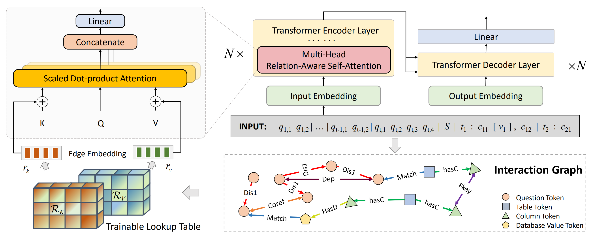
RASAT: Integrating Relational Structures into Pretrained Seq2Seq Model for Text-to-SQL
Jiexing Qi, Jingyao Tang, Ziwei He, Xiangpeng Wan, Yu Cheng, Chenghu Zhou, Xinbing Wang, Quanshi Zhang, Zhouhan Lin#
Relational structures such as schema linking and schema encoding have been validated as a key component to qualitatively translating natural language into SQL queries. We propose RASAT: a Transformer seq2seq architecture augmented with relation-aware
self-attention that could leverage a variety of relational structures while still being able to inherit the pretrained parameters from the T5 model effectively. Our model can incorporate almost all types of existing relations
in the literature. Experimental results on three widely used text-to-SQL datasets, covering both single-turn and multi-turn scenarios, have shown that RASAT could achieve state-of-the-art results across all three benchmarks
(75.5% EX on Spider, 52.6% IEX on SParC, and 37.4% IEX on CoSQL).
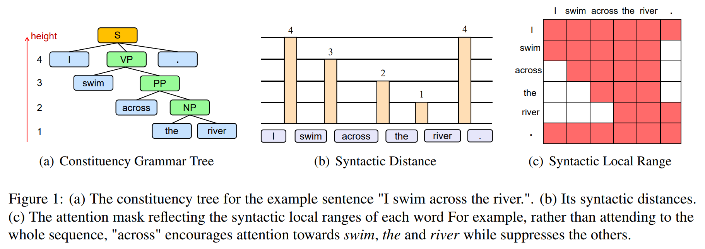
Syntax-guided Localized Self-attention by Constituency Syntactic Distance
Shengyuan Hou*, Jushi Kai*, Haotian Xue*, Bingyu Zhu, Bo Yuan, Longtao Huang, Xinbing Wang, Zhouhan Lin#
We propose a syntax-guided localized self-attention for Transformer that allows directly incorporating grammar structures from an external constituency parser. It prohibits the attention mechanism from overweight the grammatically distant tokens over
close ones.
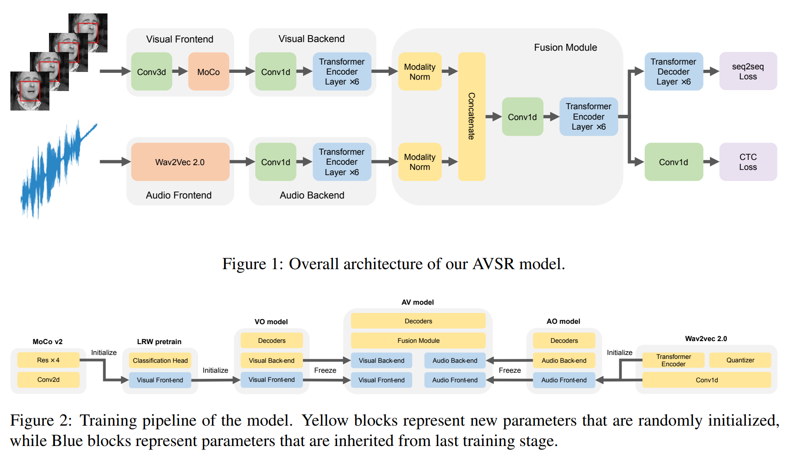
Leveraging Unimodal Self-Supervised Learning for Multimodal Audio-Visual Speech Recognition
Xichen Pan, Peiyu Chen, Yichen Gong, Helong Zhou, Xinbing Wang, Zhouhan Lin#
In this work, we successfully leverage unimodal self-supervised learning to promote the multimodal AVSR. In particular, audio and visual front-ends are trained on large-scale unimodal datasets, and then we integrate components of both front-ends into
a larger multimodal framework that learns to recognize parallel audio-visual data into characters through a combination of CTC and seq2seq decoding. We show that both components inherited from unimodal self-supervised learning
cooperate well, resulting in the multimodal framework yielding competitive results through fine-tuning. Even without an external language model, our proposed model raises the SOTA performances on the widely accepted Lip
Reading Sentences 2 (LRS2) dataset by a large margin, with a relative improvement of 30%.
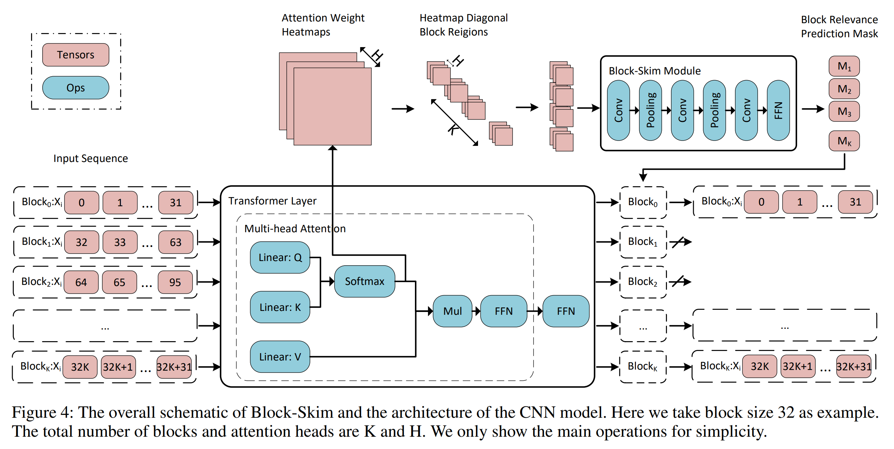
Block-Skim: Efficient Question Answering for Transformer
Yue Guan, Zhengyi Li, Jingwen Leng#, Zhouhan Lin#, Minyi Guo, Yuhao Zhu
We propose Block-skim, which learns to skim unnecessary context in higher hidden layers to improve and accelerate the Transformer performance. The key idea of Block-Skim is to identify the context that must be further processed and those that could be
safely discarded early on during inference. Critically, we find that such information could be sufficiently derived from the self-attention weights inside the Transformer model. We further prune the hidden states corresponding
to the unnecessary positions early in lower layers, achieving significant inference-time speedup. To our surprise, we observe that models pruned in this way outperform their full-size counterparts.
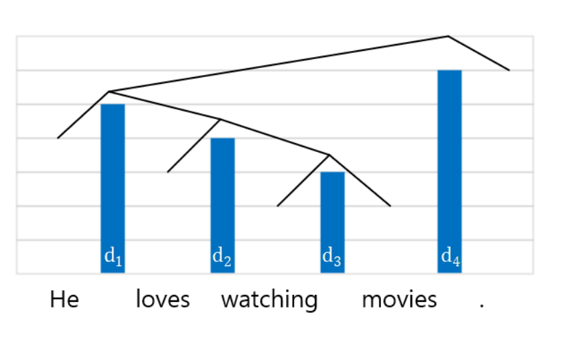
Exploiting Syntactic Structure for Better Language Modeling: A Syntactic Distance Approach
Wenyu Du*, Zhouhan Lin*, Yikang Shen, Timothy J. O'Donnell, Yoshua Bengio, Yue Zhang#
It is commonly believed that knowledge of syntactic structure should improve language modeling. However, effectively and computationally efficiently incorporating syntactic structure into neural language models has been a challenging topic. In this paper,
we make use of a multi-task objective, i.e., the models simultaneously predict words as well as ground truth parse trees in a form called "syntactic distances", where information between these two separate objectives shares
the same intermediate representation. Experimental results on the Penn Treebank and Chinese Treebank datasets show that when ground truth parse trees are provided as additional training signals, the model is able to achieve
lower perplexity and induce trees with better quality.
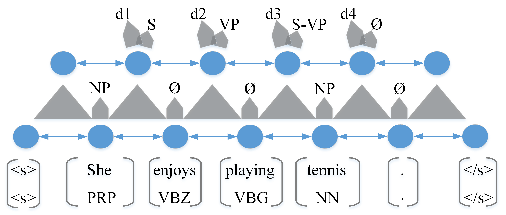
Straight to the Tree: Constituency Parsing with Neural Syntactic Distance
Yikang Shen*, Zhouhan Lin*, Athul Paul Jacob, Alessandro Sordoni, Aaron Courville, Yoshua Bengio
We propose a novel constituency parsing scheme. The model predicts a vector of real-valued scalars, named syntactic distances, for each split position in the input sentence. The syntactic distances specify the order in which the split points will be selected,
recursively partitioning the input, in a top-down fashion. Compared to traditional shiftreduce parsing schemes, our approach is free from the potential problem of compounding errors, while being faster and easier to parallelize.
Our model achieves competitive performance amongst single model, discriminative parsers in the PTB dataset and outperforms previous models in the CTB dataset.
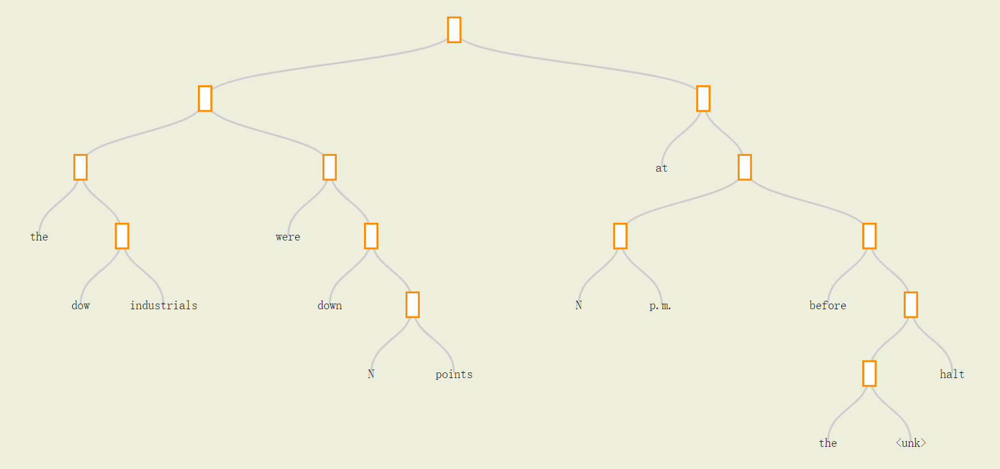
Neural Language Modeling by Jointly Learning Syntax and Lexicon
Yikang Shen, Zhouhan Lin, Chin-Wei Huang, Aaron Courville
We propose a neural language model capable of unsupervised syntactic structure induction. The model leverages the structure information to form better semantic representations and better language modeling. Standard recurrent neural networks are limited
by their structure and fail to efficiently use syntactic information. On the other hand, tree-structured recursive networks usually require additional structural supervision at the cost of human expert annotation. In this
paper, We propose a novel neural language model, called the Parsing-Reading-Predict Networks (PRPN), that can simultaneously induce the syntactic structure from unannotated sentences and leverage the inferred structure
to learn a better language model. In our model, the gradient can be directly back-propagated from the language model loss into the neural parsing network. Experiments show that the proposed model can discover the underlying
syntactic structure and achieve state-of-the-art performance on word/character-level language model tasks.
A structured self-attentive Sentence Embedding
Zhouhan Lin, Minwei Feng, Cicero Nogueira dos Santos, Mo Yu, Bing Xiang, Bowen Zhou and Yoshua Bengio
We propose a new model for extracting an interpretable sentence embedding by introducing self-attention. Instead of using a vector, we use a 2-D matrix to represent the embedding, with each row of the matrix attending on a different part of the sentence.
We also propose a self-attention mechanism and a special regularization term for the model. As a side effect, the embedding comes with an easy way of visualizing what specific parts of the sentence are encoded into the
embedding. We evaluate our model on 3 different tasks: author profiling, sentiment classification, and textual entailment. Results show that our model yields a significant performance gain compared to other sentence embedding
methods in all of the 3 tasks.
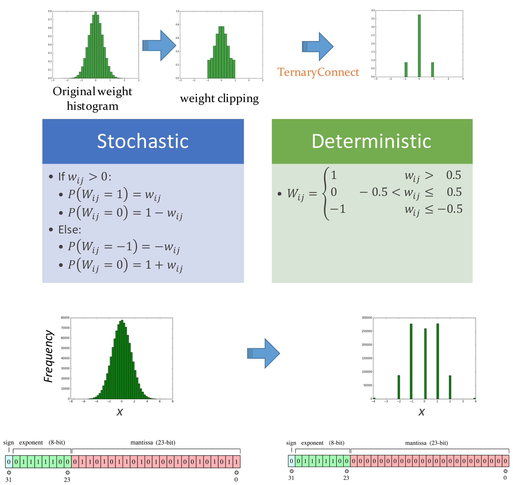
Neural networks with few multiplications
Zhouhan Lin, Matthieu Courbariaux, Roland Memisevic, and Yoshua Bengio
For most deep learning algorithms training is notoriously time consuming. Since most of the computation in training neural networks is typically spent on floating point multiplications, we investigate an approach to training that eliminates the need for
most of these. Our method consists of two parts: First we stochastically binarize weights to convert multiplications involved in computing hidden states to sign changes. Second, while back-propagating error derivatives,
in addition to binarizing the weights, we quantize the representations at each layer to convert the remaining multiplications into binary shifts. Experimental results across 3 popular datasets (MNIST, CIFAR10, SVHN) show
that this approach not only does not hurt classification performance but can result in even better performance than standard stochastic gradient descent training, paving the way to fast, hardwarefriendly training of neural
networks.
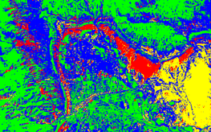
Deep learning-based classification of hyperspectral data
Yushi Chen, Zhouhan Lin, Xing Zhao, Gang Wang, and Yanfeng Gu
Journal of Selected Topics in Applied Earth Observations and Remote Sensing, 2014
|
pdf
|
codes
Classification is one of the most popular topics in hyperspectral remote sensing. In the last two decades, a huge number of methods were proposed to deal with the hyperspectral data classification problem. However, most of them do not hierarchically extract
deep features. In this paper, the concept of deep learning is introduced into hyperspectral data classification for the first time. First, we verify the eligibility of stacked autoencoders by following classical spectral
information-based classification. Second, a new way of classifying with spatial-dominated information is proposed. We then propose a novel deep learning framework to merge the two features, from which we can get the highest
classification accuracy. The framework is a hybrid of principle component analysis (PCA), deep learning architecture, and logistic regression. Specifically, as a deep learning architecture, stacked autoencoders are aimed
to get useful high-level features. Experimental results with widely-used hyperspectral data indicate that classifiers built in this deep learning-based framework provide competitive performance. In addition, the proposed
joint spectral–spatial deep neural network opens a new window for future research, showcasing the deep learning-based methods’ huge potential for accurate hyperspectral data classification.